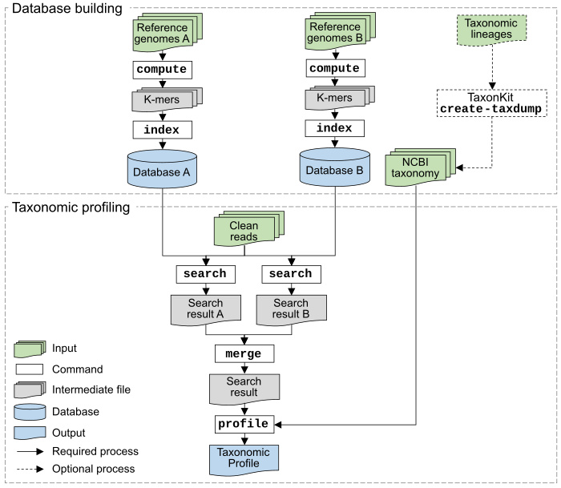

Usage

KMCP is a command-line tool consisting of several subcommands.
| Subcommand | Function |
|---|---|
| compute | Generate k-mers (sketch) from FASTA/Q sequences |
| index | Construct adatabase from k-mer files |
| search | Search sequences against a database |
| merge | Merge search results from multiple databases |
| profile | Generate the taxonomic profile from search results |
| utils split-genomes | Split genomes into chunks |
| utils unik-info | Print information of .unik files |
| utils index-info | Print information of index files |
| utils index-density | Plot the element density of bloom filters for an index file |
| utils ref-info | Print information of reference chunks in a database |
| utils cov2simi | Convert k-mer coverage to sequence similarity |
| utils query-fpr | Compute the false positive rate of a query |
| utils filter | Filter search results and find species/assembly-specific queries |
| utils merge-regions | Merge species/assembly-specific regions |
kmcp
Program: kmcp (K-mer-based Metagenomic Classification and Profiling)
Version: v0.9.2
Documents: https://bioinf.shenwei.me/kmcp
Source code: https://github.com/shenwei356/kmcp
KMCP is a tool for metagenomic classification and profiling.
KMCP can also be used for:
1. Fast sequence search against large scales of genomic datasets
as BIGSI and COBS do.
2. Fast assembly/genome similarity estimation as Mash and sourmash do,
by utilizing Minimizer, FracMinHash (Scaled MinHash), or Closed Syncmers.
Usage:
kmcp [command]
Available Commands:
autocompletion Generate shell autocompletion script
compute Generate k-mers (sketches) from FASTA/Q sequences
index Construct a database from k-mer files
merge Merge search results from multiple databases
profile Generate the taxonomic profile from search results
search Search sequences against a database
utils Some utilities
version Print version information and check for update
Flags:
-h, --help help for kmcp
-i, --infile-list string ► File of input files list (one file per line). If given, they are
appended to files from CLI arguments.
--log string ► Log file.
-q, --quiet ► Do not print any verbose information. But you can write them to file
with --log.
-j, --threads int ► Number of CPUs cores to use. (default 16)
Use "kmcp [command] --help" for more information about a command.
compute
Generate k-mers (sketches) from FASTA/Q sequences
Input:
1. Input plain or gzipped FASTA/Q files can be given via positional
arguments or the flag -i/--infile-list with the list of input files,
2. Or a directory containing sequence files via the flag -I/--in-dir,
with multiple-level sub-directories allowed. A regular expression
for matching sequencing files is available via the flag -r/--file-regexp.
*3. For taxonomic profiling, the sequences of each reference genome should be
saved in a separate file, with the reference identifier in the file name.
Attention:
You may rename the sequence files for convenience because the
sequence/genome identifier in the index and search results would be:
1). For the default mode (computing k-mers for the whole file):
the basename of file with common FASTA/Q file extension removed,
captured via the flag -N/--ref-name-regexp.
2). For splitting sequence mode (see details below):
same to 1).
3). For computing k-mers for each sequence:
the sequence identifier.
Attentions:
1. Unwanted sequences like plasmid can be filtered out by
the name via regular expressions (-B/--seq-name-filter).
2. By default, kmcp computes k-mers (sketches) of every file,
you can also use --by-seq to compute for every sequence,
where sequence IDs in all input files are better to be distinct.
3. It also supports splitting sequences into chunks, this
could increase the specificity in search results at the cost
of a slower searching speed.
4. Multiple sizes of k-mers are supported.
Supported k-mer (sketches) types:
1. K-mer:
1). ntHash of k-mer (-k)
2. K-mer sketchs (all using ntHash):
1). FracMinHash (-k -D), previously named Scaled MinHash
2). Minimizer (-k -W), optionally scaling/down-sampling (-D)
3). Closed Syncmer (-k -S), optionally scaling/down-sampling (-D)
Splitting sequences:
1. Sequences can be splitted into chunks by a chunk size
(-s/--split-size) or number of chunks (-n/--split-number)
with overlap (-l/--split-overlap).
In this mode, the sequences of each genome should be saved in an
individual file.
2. When splitting by number of chunks, all sequences (except for
these matching any regular expression given by -B/--seq-name-filter)
in a sequence file are concatenated with k-1 N's before splitting.
3. Both sequence IDs and chunks indices are saved for later use,
in form of meta/description data in .unik files.
Metadata:
1. Every outputted .unik file contains the sequence/reference ID,
chunk index, number of chunks, and genome size of reference.
2. When parsing whole sequence files or splitting by the number of chunks,
the identifier of a reference is the basename of the input file
by default. It can also be extracted from the input file name via
-N/--ref-name-regexp, e.g., "^(\w{3}_\d{9}\.\d+)" for RefSeq records.
Output:
1. All outputted .unik files are saved in ${outdir}, with path
${outdir}/xxx/yyy/zzz/${infile}-id_${seqID}.unik
where dirctory tree '/xxx/yyy/zzz/' is built for > 1000 output files.
2. For splitting sequence mode (--split-size > 0 or --split-number > 0),
output files are:
${outdir}//xxx/yyy/zzz/${infile}/{seqID}-chunk_${chunkIdx}.unik
3. A summary file ("${outdir}/_info.txt") is generated for later use.
Users need to check if the reference IDs (column "name") are what
supposed to be.
Performance tips:
1. Decrease the value of -j/--threads for data in hard disk drives to
reduce I/O pressure.
Next step:
1. Check the summary file (${outdir}/_info.txt) to see if the reference
IDs (column "name") are what supposed to be.
2. Run "kmcp index" with the output directory.
Examples:
1. From few sequence files:
kmcp compute -k 21 -n 10 -l 150 -O tmp-k21-n10-l150 NC_045512.2.fna.gz
2. From a list file:
kmcp compute -k 21 -n 10 -l 150 -O tmp-k21-210-l150 -i list.txt
3. From a directory containing many sequence files:
kmcp compute -k 21 -n 10 -l 150 -B plasmid \
-O gtdb-k21-n10-l150 -I gtdb-genomes/
Usage:
kmcp compute [flags] [-k <k>] [-n <chunks>] [-l <overlap>] {[-I <seqs dir>] | <seq files>} -O <out dir>
Flags:
--by-seq ► Compute k-mers (sketches) for each sequence, instead of the whole file.
--circular ► Input sequences are circular. Note that it only applies to genomes
with a single chromosome.
-c, --compress ► Output gzipped .unik files, it's slower and can save little space.
-r, --file-regexp string ► Regular expression for matching sequence files in -I/--in-dir,
case ignored. (default "\\.(f[aq](st[aq])?|fna)(.gz)?$")
--force ► Overwrite existed output directory.
-h, --help help for compute
-I, --in-dir string ► Directory containing FASTA/Q files. Directory symlinks are followed.
-k, --kmer ints ► K-mer size(s). K needs to be <=64. Multiple values are supported,
e.g., "-k 21,31" or "-k 21 -k 31" (default [21])
-W, --minimizer-w int ► Minimizer window size.
-O, --out-dir string ► Output directory.
-N, --ref-name-regexp string ► Regular expression (must contains "(" and ")") for extracting
reference name from filename. (default
"(?i)(.+)\\.(f[aq](st[aq])?|fna)(.gz)?$")
-D, --scale int ► Scale of the FracMinHash (Scaled MinHash), or down-sample factor
for Syncmers and Minimizer. (default 1)
-B, --seq-name-filter strings ► List of regular expressions for filtering out sequences by
header/name, case ignored.
-m, --split-min-ref int ► Only splitting sequences >= X bp. (default 1000)
-n, --split-number int ► Chunk number for splitting sequences, incompatible with
-s/--split-size.
-l, --split-overlap int ► Chunk overlap for splitting sequences. The default value will be
set to k-1 unless you change it.
-s, --split-size int ► Chunk size for splitting sequences, incompatible with
-n/--split-number.
-S, --syncmer-s int ► Length of the s-mer in Closed Syncmers.
index
Construct a database from k-mer files
We build the index for k-mers (sketches) with a modified compact bit-sliced
signature index (COBS). We totally rewrite the algorithms, data structure,
and file format, and have improved the indexing and searching speed.
Input:
The output directory generated by "kmcp compute".
Database size and searching accuracy:
0. Use --dry-run to adjust parameters and check the final number of
index files (#index-files) and the total file size.
1. -f/--false-positive-rate: the default value 0.3 is enough for a
query with tens of k-mers (see BIGSI/COBS paper).
Small values could largely increase the size of the database.
2. -n/--num-hash: large values could reduce the database size,
at the cost of a slower searching speed. Values <=4 are recommended.
3. The value of block size -b/--block-size better to be multiple of 64.
The default value is: (#unikFiles/#threads + 7) / 8 * 8
4. Use flag -x/--block-sizeX-kmers-t, -8/--block-size8-kmers-t,
and -1/--block-size1-kmers-t to separately create indexes for
inputs with a huge number of k-mers, for precise control of
database size.
References:
1. COBS: https://arxiv.org/abs/1905.09624
Taxonomy data:
1. No taxonomy data are included in the database.
2. Taxonomy information are only needed in "profile" command.
Performance tips:
1. The number of blocks (.uniki files) is better be smaller than
or equal to the number of CPU cores for faster searching speed.
We can set the flag -j/--threads to control the blocks number.
When more threads (>= 1.3 * #blocks) are given, extra workers are
automatically created.
2. #threads files are simultaneously opened, and the max number
of opened files is limited by the flag -F/--max-open-files.
You may use a small value of -F/--max-open-files for
hard disk drive storages.
3. When the database is used in a new computer with more CPU cores,
'kmcp search' could automatically scale to utilize as many cores
as possible.
Next step:
1. Use 'kmcp search' for searching.
2. Use 'kmcp utils ref-info' to check the number of k-mers and FPR
of each genome chunk.
Examples:
1. For bacterial genomes:
kmcp index -f 0.3 -n 1 -j 32 -I gtdb-k21-n10-l150/ -O gtdb.kmcp
2. For viruses, use -x and -8 to control index size of the largest chunks:
kmcp index -f 0.05 -n 1 -j 32 -x 100K -8 1M \
-I genbank-viral-k21-n10-l150/ -O genbank-viral.kmcp
Usage:
kmcp index [flags] [-f <fpr>] [-n <hashes>] [-j <blocks>] -I <compute output> -O <kmcp db>
Flags:
-a, --alias string ► Database alias/name. (default: basename of --out-dir). You can
also manually edit it in info file: ${outdir}/__db.yml.
-b, --block-size int ► Block size, better be multiple of 64 for large number of input
files. (default: min(#.files/#theads, 8))
-1, --block-size1-kmers-t string ► If k-mers of single .unik file exceeds this threshold, an
individual index is created for this file. Supported units: K, M,
G. (default "200M")
-8, --block-size8-kmers-t string ► If k-mers of single .unik file exceeds this threshold, block
size is changed to 8. Supported units: K, M, G. (default "20M")
-X, --block-sizeX int ► If k-mers of single .unik file exceeds --block-sizeX-kmers-t,
block size is changed to this value. (default 256)
-x, --block-sizeX-kmers-t string ► If k-mers of single .unik file exceeds this threshold, block
size is changed to --block-sizeX. Supported units: K, M, G.
(default "10M")
--dry-run ► Dry run, useful for adjusting parameters (highly recommended).
-f, --false-positive-rate float ► False positive rate of the bloom filters, range: (0, 1).
(default 0.3)
--file-regexp string ► Regular expression for matching files in -I/--in-dir, case
ignored. (default ".unik$")
--force ► Overwrite existed output directory.
-h, --help help for index
-I, --in-dir string ► Directory containing .unik files. Directory symlinks are followed.
-F, --max-open-files int ► Maximum number of opened files, please use a small value for
hard disk drive storage. (default 256)
-n, --num-hash int ► Number of hash functions in bloom filters. (default 1)
-O, --out-dir string ► Output directory. (default: ${indir}.kmcp-db)
search
Search sequences against a database
Attentions:
1. Input format should be (gzipped) FASTA or FASTQ from files or stdin.
- Paired-end files should be given via -1/--read1 and -2/--read2.
kmcp search -d db -1 read_1.fq.gz -2 read_2.fq.gz -o read.tsv.gz
- Single-end can be given as positional arguments or -1/-2.
kmcp search -d db file1.fq.gz file2.fq.gz -o result.tsv.gz
**Single-end mode is recommended for paired-end reads, for higher sensitivity**.
2. A long query sequence may contain duplicated k-mers, which are
not removed for short sequences by default. You may modify the
value of -u/--kmer-dedup-threshold to remove duplicates.
3. For long reads or contigs, you should split them into short reads
using "seqkit sliding", e.g.,
seqkit sliding -s 100 -W 300
Shared flags between "search" and "profile":
1. -t/--min-query-cov
2. -f/--max-fpr
Index files loading modes:
1. Using memory-mapped index files with mmap (default):
- Faster startup speed when index files are buffered in memory.
- Multiple KMCP processes can share the memory.
2. Loading the whole index files into memory (-w/--load-whole-db):
- This mode occupies a little more memory.
And multiple KMCP processes can not share the database in memory.
- It's slightly faster due to the use of physically contiguous memory.
The speedup is more significant for smaller databases.
- **Please switch on this flag when searching on computer clusters,
where the default mmap mode would be very slow for network-attached
storage (NAS)**.
3. Low memory mode (--low-mem):
- Do not load all index files into memory nor use mmap, using file seeking.
- It's much slower, >4X slower on SSD and would be much slower on HDD disks.
- Only use this mode for small number of queries or a huge database that
can't be loaded into memory.
Output format:
Tab-delimited format with 15 columns:
1. query, Identifier of the query sequence
2. qLen, Query length
3. qKmers, K-mer number of the query sequence
4. FPR, False positive rate of the match
5. hits, Number of matches
6. target, Identifier of the target sequence
7. chunkIdx, Index of reference chunk
8. chunks, Number of reference chunks
9. tLen, Reference length
10. kSize, K-mer size
11. mKmers, Number of matched k-mers
12. qCov, Query coverage, equals to: mKmers / qKmers
13. tCov, Target coverage, equals to: mKmers / K-mer number of reference chunk
14. jacc, Jaccard index
15. queryIdx, Index of query sequence, only for merging
The values of tCov and jacc in results only apply to databases built
with a single size of k-mer.
Performance tips:
1. Increase the value of -j/--threads for acceleratation, but values larger
than the number of CPU cores won't bring extra speedup.
2. When more threads (>= 1.3 * #blocks) are given, extra workers are
automatically created.
Examples:
1. Single-end mode (recommended)
kmcp search -d gtdb.kmcp -o sample.kmcp@gtdb.kmcp.tsv.gz \
sample_1.fq.gz sample_2.fq.gz sample_1_unpaired.fq.gz sample_2_unpaired.fq.gz
2. Paired-end mode
kmcp search -d gtdb.kmcp -o sample.kmcp@gtdb.kmcp.tsv.gz \
-1 sample_1.fq.gz -2 sample_2.fq.gz
3. In computer clusters, where databases are saved in NAS storages.
kmcp search -w -d gtdb.n16-00.kmcp -o sample.kmcp@gtdb.n16-00.kmcp.tsv.gz \
sample_1.fq.gz sample_2.fq.gz
Usage:
kmcp search [flags] [-w] -d <kmcp db> [-t <min-query-cov>] [read1.fq.gz] [read2.fq.gz] [unpaired.fq.gz] [-o read.tsv.gz]
Flags:
-d, --db-dir string ► Database directory created by "kmcp index". Please add
-w/--load-whole-db for databases on network-attached storages (NAS),
e.g., a computer cluster environment.
-D, --default-name-map ► Load ${db}/__name_mapping.tsv for mapping name first.
-S, --do-not-sort ► Do not sort matches of a query.
-h, --help help for search
-n, --keep-top-scores int ► Keep matches with the top N scores for a query, 0 for all.
-K, --keep-unmatched ► Keep unmatched query sequence information.
-u, --kmer-dedup-threshold int ► Remove duplicated kmers for a query with >= X k-mers. (default 256)
-w, --load-whole-db ► Load all index files into memory, it's faster for small databases
but needs more memory. Use this for databases on network-attached
storages (NAS). Please read "Index files loading modes" in "kmcp
search -h".
--low-mem ► Do not load all index files into memory nor use mmap, the
searching would be very very slow for a large number of queries.
Please read "Index files loading modes" in "kmcp search -h".
-f, --max-fpr float ► Maximum false positive rate of a query. (default 0.01)
-c, --min-kmers int ► Minimum number of matched k-mers (sketches). (default 10)
-t, --min-query-cov float ► Minimum query coverage, i.e., proportion of matched k-mers and
unique k-mers of a query. (default 0.55)
-m, --min-query-len int ► Minimum query length. (default 30)
-T, --min-target-cov float ► Minimum target coverage, i.e., proportion of matched k-mers and
unique k-mers of a target.
-N, --name-map strings ► Tabular two-column file(s) mapping reference IDs to user-defined
values. Don't use this if you will use the result for metagenomic
profiling which needs the original reference IDs.
-H, --no-header-row ► Do not print header row.
-o, --out-file string ► Out file, supports and recommends a ".gz" suffix ("-" for
stdout). (default "-")
--query-id string ► Custom query Id when using the whole file as a query.
-g, --query-whole-file ► Use the whole file as a query, e.g., for genome similarity
estimation against k-mer sketch database.
-1, --read1 string ► (Gzipped) read1 file.
-2, --read2 string ► (Gzipped) read2 file.
-s, --sort-by string ► Sort hits by "qcov", "tcov" or "jacc" (Jaccard Index). (default
"qcov")
--try-se ► If paired-end reads have no hits, re-search with read1, if still
fails, try read2.
-G, --use-filename ► Use file name as query ID when using the whole file as a query.
merge
Merge search results from multiple databases
Input:
*. Searching results of the same reads in different databases.
*. The order of multiple input reads files should be the same during searching.
*. When only one input given, we just copy and write to the input file.
This is friendly to workflows which assume multiple inputs are given.
Example:
kmcp merge -o search.kmcp.tsv.gz search.kmcp@*.kmcp.tsv.gz
Usage:
kmcp merge [flags] [-o read.tsv.gz] [<search results> ...]
Flags:
-n, --field-hits int ► Field of hits. (default 5)
-f, --field-queryIdx int ► Field of queryIdx. (default 15)
-h, --help help for merge
-H, --no-header-row ► Do not print header row.
-o, --out-file string ► Out file, supports and recommends a ".gz" suffix ("-" for stdout).
(default "-")
-s, --sort-by string ► Sort hits by "qcov", "tcov" or "jacc" (Jaccard Index). (default "qcov")
profile
Generate the taxonomic profile from search results
Methods:
1. Reference genomes can be split into chunks when computing
k-mers (sketches), which could help to increase the specificity
via a threshold, i.e., the minimum proportion of matched chunks
(-p/--min-chunks-fraction). (***highly recommended***)
Another flag -d/--max-chunks-depth-stdev further reduces false positives.
2. We require a part of the uniquely matched reads of a reference
having high similarity, i.e., with high confidence for decreasing
the false positive rate.
3. We also use the two-stage taxonomy assignment algorithm in MegaPath
to reduce the false positives of ambiguous matches.
You can also disable this step by the flag --no-amb-corr.
If stage 1/4 produces thousands of candidates, you can use
the flag --no-amb-corr to reduce analysis time, which has very little
effect on the results.
4. Abundance are estimated using an Expectation-Maximization (EM) algorithm.
5. Input files are parsed for multiple times, therefore STDIN is not supported.
Reference:
1. MegaPath: https://doi.org/10.1186/s12864-020-06875-6
Accuracy notes:
*. Smaller -t/--min-qcov increase sensitivity at the cost of higher false
positive rate (-f/--max-fpr) of a query.
*. We require a part of the uniquely matched reads of a reference
having high similarity, i.e., with high confidence for decreasing
the false positive rate.
E.g., -H >= 0.8 and -P >= 0.1 equals to 90th percentile >= 0.8
*. -U/--min-hic-ureads, minimum number, >= 1
*. -H/--min-hic-ureads-qcov, minimum query coverage, >= -t/--min-qcov
*. -P/--min-hic-ureads-prop, minimum proportion, higher values
increase precision at the cost of sensitivity.
*. -R/--max-mismatch-err and -D/--min-dreads-prop is for determing
the right reference for ambiguous reads with the algorithm in MegaPath.
*. --keep-perfect-matches is not recommended, which decreases sensitivity.
*. --keep-main-matches is not recommended, which affects accuracy of
abundance estimation.
*. -n/--keep-top-qcovs is not recommended, which affects accuracy of
abundance estimation.
Profiling modes:
We preset six profiling modes, available with the flag -m/--mode:
- 0 (for pathogen detection)
- 1 (higher recall)
- 2 (high recall)
- 3 (default)
- 4 (high precision)
- 5 (higher precision)
You can still change the values of some options below as usual.
options m=0 m=1 m=2 m=3 m=4 m=5
--------------------------- ---- --- --- ---- --- ----
-r/--min-chunks-reads 1 5 10 50 100 100
-p/--min-chunks-fraction 0.2 0.6 0.7 0.8 1 1
-d/--max-chunks-depth-stdev 10 2 2 2 2 1.5
-u/--min-uniq-reads 1 2 5 20 50 50
-U/--min-hic-ureads 1 1 2 5 10 10
-H/--min-hic-ureads-qcov 0.7 0.7 0.7 0.75 0.8 0.8
-P/--min-hic-ureads-prop 0.01 0.1 0.2 0.1 0.1 0.15
--keep-main-matches true
--max-qcov-gap 0.4
Taxonomy data:
1. Mapping references IDs to TaxIds: -T/--taxid-map
2. NCBI taxonomy dump files: -X/--taxdump
For databases built with a custom genome collection, you can use
"taxonkit create-taxdump" (https://github.com/shenwei356/taxonkit)
to create NCBI-style taxdump files, which also generates a TaxId mapping file.
Performance notes:
1. Searching results are parsed in parallel, and the number of
lines proceeded by a thread can be set by the flag --line-chunk-size.
2. However using a lot of threads does not always accelerate
processing, 4 threads with a chunk size of 500-5000 is fast enough.
*3. If stage 1/4 produces thousands of candidates, then stage 2/4
would be very slow. You can use the flag --no-amb-corr to disable
ambiguous reads correction which has very little effect on the results.
Profiling output formats:
1. KMCP (-o/--out-file)
Note that: abundances are only computed for target references rather than
each taxon at all taxonomic ranks, so please also output CAMI or MetaPhlAn format.
2. CAMI (-M/--metaphlan-report, --metaphlan-report-version,
-s/--sample-id, --taxonomy-id)
Related tools (https://github.com/shenwei356/taxonkit):
- taxonkit profile2cami: convert any metagenomic profile table with
TaxIds to CAMI format. Use this if you forget to output CAMI format.
- taxonkit cami-filter: remove taxa of given TaxIds and their
descendants in a CAMI metagenomic profile.
3. MetaPhlAn (-C/--cami-report, -s/--sample-id)
KMCP format:
Tab-delimited format with 17 columns:
1. ref, Identifier of the reference genome
2. percentage, Relative abundance of the reference
3. coverage, Average coverage of the reference
4. score, The 90th percentile of qCov of uniquely matched reads
5. chunksFrac, Genome chunks fraction
6. chunksRelDepth, Relative depths of reference chunks
7. chunksRelDepthStd, The standard deviation of chunksRelDepth
8. reads, Total number of matched reads of this reference
9. ureads, Number of uniquely matched reads
10. hicureads, Number of uniquely matched reads with high-confidence
11. refsize, Reference size
12. refname, Reference name, optional via name mapping file
13. taxid, TaxId of the reference
14. rank, Taxonomic rank
15. taxname, Taxonomic name
16. taxpath, Complete lineage
17. taxpathsn, Corresponding TaxIds of taxa in the complete lineage
Taxonomic binning formats:
1. CAMI (-B/--binning-result)
Examples:
1. Default mode:
kmcp profile -X taxdump/ -T taxid.map -m 3 \
sample.kmcp.tsv.gz -o sample.k.profile \
-C sample.c.profile -s sample
2. For pathogen detection (you may create databases with lower FPRs,
e.g., kmcp index -f 0.1 -n 2 for bacteria and fungi genomes,
and search with a low k-mer coverage threshold -t 0.4):
kmcp profile -X taxdump/ -T taxid.map -m 3 -t 0.4 \
sample.kmcp.tsv.gz -o sample.k.profile
Usage:
kmcp profile [flags] [-X <taxdump dir>] [-T <taxid.map>] [-m <mode>] [-o <kmcp profile>] <search results>
Flags:
-I, --abund-max-iters int ► Miximal iteration of abundance estimation. (default 10)
--abund-pct-threshold float ► If the percentage change of the predominant target is
smaller than this threshold, stop the iteration. (default 0.01)
-B, --binning-result string ► Save extra binning result in CAMI report.
-C, --cami-report string ► Save extra CAMI-like report.
--debug string ► Debug output file.
-F, --filter-low-pct float ► Filter out predictions with the smallest relative
abundances summing up X%. Range: [0,100).
-h, --help help for profile
--keep-main-matches ► Only keep main matches, abandon matches with sharply
decreased qcov (> --max-qcov-gap).
--keep-perfect-matches ► Only keep the perfect matches (qcov == 1) if there are.
-n, --keep-top-qcovs int ► Keep matches with the top N qcovs for a query, 0 for all.
--level string ► Level to estimate abundance at. Available values: species,
strain/assembly. (default "species")
--line-chunk-size int ► Number of lines to process for each thread, and 4 threads
is fast enough. Type "kmcp profile -h" for details. (default 5000)
-d, --max-chunks-depth-stdev float ► Maximum standard deviation of relative depths of all
chunks. (default 2)
-f, --max-fpr float ► Maximum false positive rate of a read in search result.
(default 0.01)
-R, --max-mismatch-err float ► Maximum error rate of a read being matched to a wrong
reference, for determing the right reference for ambiguous
reads. Range: (0, 1). (default 0.05)
--max-qcov-gap float ► Max qcov gap between adjacent matches. (default 0.4)
-M, --metaphlan-report string ► Save extra metaphlan-like report.
--metaphlan-report-version string ► Metaphlan report version (2 or 3) (default "3")
-p, --min-chunks-fraction float ► Minimum fraction of matched reference chunks with reads >=
-r/--min-chunks-reads. (default 0.8)
-r, --min-chunks-reads int ► Minimum number of reads for a reference chunk. (default 50)
-D, --min-dreads-prop float ► Minimum proportion of distinct reads, for determing the
right reference for ambiguous reads. Range: (0, 1). (default 0.05)
-U, --min-hic-ureads int ► Minimum number of high-confidence uniquely matched reads
for a reference. (default 5)
-P, --min-hic-ureads-prop float ► Minimum proportion of high-confidence uniquely matched
reads. (default 0.1)
-H, --min-hic-ureads-qcov float ► Minimum query coverage of high-confidence uniquely matched
reads. (default 0.75)
-t, --min-query-cov float ► Minimum query coverage of a read in search result.
(default 0.55)
-u, --min-uniq-reads int ► Minimum number of uniquely matched reads for a reference.
(default 20)
-m, --mode int ► Profiling mode, type "kmcp profile -h" for details.
available values: 0 (for pathogen detection), 1
(higherrecall), 2 (high recall), 3 (default), 4 (high
precision), 5 (higher precision). (default 3)
-N, --name-map strings ► Tabular two-column file(s) mapping reference IDs to
reference names.
--no-amb-corr ► Do not correct ambiguous reads. Use this flag to reduce
analysis time if the stage 1/4 produces thousands of candidates.
--norm-abund string ► Method for normalize abundance of a reference by the
mean/min/max abundance in all chunks, available values: mean,
min, max. (default "mean")
-o, --out-file string ► Out file, supports a ".gz" suffix ("-" for stdout).
(default "-")
--rank-prefix strings ► Prefixes of taxon name in certain ranks, used with
--metaphlan-report. (default [k__,p__,c__,o__,f__,g__,s__,t__])
-s, --sample-id string ► Sample ID in result file.
-S, --separator string ► Separator of TaxIds and taxonomy names. (default ";")
--show-rank strings ► Only show TaxIds and names of these ranks. (default
[superkingdom,phylum,class,order,family,genus,species,strain])
-X, --taxdump string ► Directory of NCBI taxonomy dump files: names.dmp,
nodes.dmp, optional with merged.dmp and delnodes.dmp.
-T, --taxid-map strings ► Tabular two-column file(s) mapping reference IDs to TaxIds.
--taxonomy-id string ► Taxonomy ID in result file.
utils
Some utilities
Usage:
kmcp utils [command]
Available Commands:
cov2simi Convert k-mer coverage to sequence similarity
filter Filter search results and find species/assembly-specific queries
index-density Plot the element density of bloom filters for an index file
index-info Print information of index files
merge-regions Merge species/assembly-specific regions
query-fpr Compute the false positive rate of a query
ref-info Print information of reference chunks in a database
split-genomes Split genomes into chunks
unik-info Print information of .unik files
ref-info
Print information of reference chunks in a database
Columns:
file, the base name of index file
i, the idx of a reference chunk in the index file, 1-based
target, reference name
chunkIdx, the idx of the chunk, 0-based
chunks, the number of chunks of the reference
kmers, the number of k-mers of the chunk
fpr, the actual false-positive rate of the chunk
Usage:
kmcp utils ref-info [flags]
Flags:
-d, --db-dir string ► Database directory created by "kmcp index".
-h, --help help for ref-info
-H, --no-header-row ► Do not print header row.
-o, --out-file string ► Out file, supports and recommends a ".gz" suffix ("-" for stdout).
(default "-")
index-info
Print information of a index file
Usage:
kmcp utils index-info [flags]
Flags:
-a, --all ► Show all information.
-b, --basename ► Only output basenames of files.
-h, --help help for index-info
-o, --out-file string ► Out file, supports a ".gz" suffix ("-" for stdout). (default "-")
index-density
Plot the element density of bloom filters for an index file
Purposes:
1. Checking whether elements (Ones) in bloom filters are uniformly distributed
via an intuitive grayscale image.
Outputs:
1. default output (a TSV file), columns:
1) target: reference id
2) chunkIdx: the index of genome chunk
3) bins: the number of bins in bloom filters for counting 1s
4) binSize: the size/width of a bin
5) counts: comma-seperated counts in each bin
2. the density image (a grayscale JPEG image):
- X: bins. The width is the number of bins
- Y: bloom filters, with each representing a genome (chunk).
The height is the number of names (genome or genome chunks)
- greyscale/darkness of a pixel: the density of a bin, calculated as:
255 - 255 * ${the number of 1s in the bin} / ${bin-size}
Examples:
1. common use:
kmcp utils index-density gtdb.kmcp/R001/_block001.uniki \
--bins 1024 --out-file t.tsv --out-img t.jpg
2. export every bit of each position, the image could fail to create:
kmcp utils index-density gtdb.kmcp/R001/_block001.uniki \
--bin-size 1 --out-file t.tsv
Usage:
kmcp utils index-density [flags]
Flags:
-s, --bin-size int ► bin size/width
-b, --bins int ► number of bins for counting the number of 1s. (default 1024)
-h, --help help for index-density
-o, --out-file string ► Out file, supports and recommends a ".gz" suffix ("-" for stdout).
(default "-")
--out-img string ► Out density image, in format of jpeg
Example: https://bioinf.shenwei.me/kmcp/faq/#are-the-elements-in-the-bloom-filters-uniformly-distributed
unik-info
Print information of .unik file
Tips:
1. For lots of small files (especially on SDD), use big value of '-j' to
parallelize counting.
Usage:
kmcp utils unik-info [flags]
Flags:
-a, --all ► All information, including the number of k-mers.
-b, --basename ► Only output basename of files.
-h, --help help for unik-info
-o, --out-file string ► Out file, supports a ".gz" suffix ("-" for stdout). (default "-")
-e, --skip-err ► Skip error, only show warning message.
--symbol-false string ► Smybol for false. (default "✕")
--symbol-true string ► Smybol for true. (default "✓")
-T, --tabular ► Output in machine-friendly tabular format.
merge-regions
Merge species/assembly-specific regions
Steps:
# 1. Simulating reads and searching on one or more databases.
seqkit sliding --step 10 --window 100 ref.fna.gz \
| kmcp search -d db1.kmcp -o ref.fna.gz.kmcp@db1.tsv.gz
seqkit sliding --step 10 --window 100 ref.fna.gz \
| kmcp search -d db2.kmcp -o ref.fna.gz.kmcp@db2.tsv.gz
# 2. Merging and filtering searching results
kmcp merge ref.fna.gz.kmcp@*.tsv.gz \
| kmcp utils filter -X taxdump -T taxid.map \
-o ref.fna.gz.kmcp.uniq.tsv.gz
# 3. Merging regions.
# Here the value of --min-overlap should be k-1.
kmcp utils merge-regions --min-overlap 20 ref.fna.gz.kmcp.uniq.tsv.gz \
-o ref.fna.gz.kmcp.uniq.tsv.gz.bed
Output (BED6 format):
1. chrom - chromosome name
2. chromStart - starting position (0-based)
3. chromEnd - ending position (0-based)
4. name - "species-specific" or "assembly-specific"
5. score - 0-1000, 1000 for "assembly-specific", others for ""species-specific"
6. strand - "."
Performance notes:
1. Searching results are parsed in parallel, and the number of
lines proceeded by a thread can be set by the flag --line-chunk-size.
2. However using a lot of threads does not always accelerate
processing, 4 threads with a chunk size of 500-5000 is fast enough.
Usage:
kmcp utils merge-regions [flags]
Flags:
-h, --help help for merge-regions
-I, --ignore-type ► Merge species and assembly-specific regions.
--line-chunk-size int ► Number of lines to process for each thread, and 4 threads is fast
enough. Type "kmcp utils merge-regions -h" for details. (default 5000)
-f, --max-fpr float ► Maximum false positive rate of a read in search result. (default 0.05)
-g, --max-gap int ► Maximum distance of starting positions of two adjacent regions, 0 for
no limitation, 1 for no merging.
-l, --min-overlap int ► Minimum overlap of two adjacent regions, recommend K-1. (default 1)
-t, --min-query-cov float ► Minimum query coverage of a read in search result. (default 0.55)
-a, --name-assembly string ► Name of assembly-specific regions. (default "assembly-specific")
-s, --name-species string ► Name of species-specific regions. (default "species-specific")
-o, --out-file string ► Out file, supports and recommends a ".gz" suffix ("-" for stdout).
(default "-")
-r, --regexp string ► Regular expression for extract reference name and query locations.
(default "^(.+)_sliding:(\\d+)\\-(\\d+)$")
filter
Filter search results and find species/assembly-specific queries
Taxonomy data:
1. Mapping references IDs to TaxIds: -T/--taxid-map
2. NCBI taxonomy dump files: -X/--taxdump
Performance notes:
1. Searching results are parsed in parallel, and the number of
lines proceeded by a thread can be set by the flag --line-chunk-size.
2. However using a lot of threads does not always accelerate
processing, 4 threads with a chunk size of 500-5000 is fast enough.
Usage:
kmcp utils filter [flags]
Flags:
-h, --help help for filter
--level string ► Level to filter. available values: species, strain/assembly. (default
"species")
--line-chunk-size int ► Number of lines to process for each thread, and 4 threads is fast
enough. Type "kmcp utils filter" for details. (default 5000)
-f, --max-fpr float ► Maximum false positive rate of a read in search result. (default 0.05)
-t, --min-query-cov float ► Minimum query coverage of a read in search result. (default 0.55)
-H, --no-header-row ► Do not print header row.
-o, --out-file string ► Out file, supports and recommends a ".gz" suffix ("-" for stdout).
(default "-")
-X, --taxdump string ► Directory of NCBI taxonomy dump files: names.dmp, nodes.dmp, optional
with merged.dmp and delnodes.dmp.
-T, --taxid-map strings ► Tabular two-column file(s) mapping reference IDs to TaxIds.
split-genomes
Split genomes into chunks
This command acts like 'kmcp compute' with many same options/flags shared,
but it only performs genome splitting and does not compute k-mers. Genome
chunks will be saved into the output directory with one file for a chunk.
One single input file or a directory with one single genome file is preferred.
Warning (experimental feature):
If more than one genome files are given, the "reference genome" with the least
and longest sequence(s) will be chosen and split into chunks. Then other genomes
are fragmented and each genome fragment is assigned to the most similar genome
chunk of the reference genome.
Usage:
kmcp utils split-genomes [flags] [-k <k>] [-n <chunks>] [-l <overlap>] {[-I <seqs dir>] | <seq files>} -O <out dir>
Flags:
--circular ► Input sequences are circular. Note that it only applies to genomes
with a single chromosome.
-r, --file-regexp string ► Regular expression for matching sequence files in -I/--in-dir,
case ignored. (default "\\.(f[aq](st[aq])?|fna)(.gz)?$")
--force ► Overwrite existed output directory.
-f, --frag-size int ► size of sequence fragments to be assigned to the reference genome
chunks. (default 100)
-h, --help help for split-genomes
-I, --in-dir string ► Directory containing FASTA files. Directory symlinks are followed.
--info-file string ► An extra output file to show which chunk(s) are assigned to for
each genome fragment.
-k, --kmer int ► K-mer size. (default 21)
-O, --out-dir string ► Output directory.
-B, --seq-name-filter strings ► List of regular expressions for filtering out sequences by
header/name, case ignored.
-m, --split-min-ref int ► Only splitting sequences >= X bp. (default 1000)
-n, --split-number int ► Chunk number for splitting sequences, incompatible with
-s/--split-size.
-l, --split-overlap int ► Chunk overlap for splitting sequences. The default value will be
set to k-1 unless you change it.
cov2simi
Convert k-mer coverage to sequence similarity
similarity = 87.456 + 26.410*qcov - 22.008*qcov*qcov + 7.325*qcov*qcov*qcov
Usage:
kmcp utils cov2simi [flags]
Flags:
-h, --help help for cov2simi
-o, --out-file string ► Out file, supports a ".gz" suffix ("-" for stdout). (default "-")
-t, --query-cov float ► K-mer query coverage, i.e., proportion of matched k-mers and unique k-mers
of a query. range: [0, 1]
query-fpr
Compute the false positive rate of a query
When the flag '-a/--all' is given, the Chernoff bound (column 'cbound')
is also output along with input parameters.
> Given K ≥ p, Solomon and Kingsford also apply a Chernoff bound and
show that the false positive probability for a query to be detected
in a document is ≤ exp(−l(K − p)^2 /(2(1 − p)))
Reference:
1. Theorem 2 in https://doi.org/10.1038/nbt.3442
2. Theorem 1 in https://arxiv.org/abs/1905.09624v2
Usage:
kmcp utils query-fpr [flags]
Flags:
-H, --add-header ► Add header line (column names
-a, --all ► Also show the value of -f, -n, and -t
-f, --false-positive-rate float ► False positive rate of a single k-mer, i.e., FPR of the bloom
filters in the database. range: (0, 1) (default 0.3)
-h, --help help for query-fpr
-m, --matched-kmers int ► The number of matched k-mers of a query. (default 35)
-n, --num-kmers int ► Number of unique k-mers of the query. (default 70)
-o, --out-file string ► Out file, supports a ".gz" suffix ("-" for stdout). (default "-")
autocompletion
Generate shell autocompletion script
Supported shell: bash|zsh|fish|powershell
Bash:
# generate completion shell
kmcp autocompletion --shell bash
# configure if never did.
# install bash-completion if the "complete" command is not found.
echo "for bcfile in ~/.bash_completion.d/* ; do source \$bcfile; done" >> ~/.bash_completion
echo "source ~/.bash_completion" >> ~/.bashrc
Zsh:
# generate completion shell
kmcp autocompletion --shell zsh --file ~/.zfunc/_kmcp
# configure if never did
echo 'fpath=( ~/.zfunc "${fpath[@]}" )' >> ~/.zshrc
echo "autoload -U compinit; compinit" >> ~/.zshrc
fish:
kmcp autocompletion --shell fish --file ~/.config/fish/completions/kmcp.fish
Usage:
kmcp autocompletion [flags]
Flags:
--file string autocompletion file (default "/home/shenwei/.bash_completion.d/kmcp.sh")
-h, --help help for autocompletion
--shell string autocompletion type (bash|zsh|fish|powershell) (default "bash")